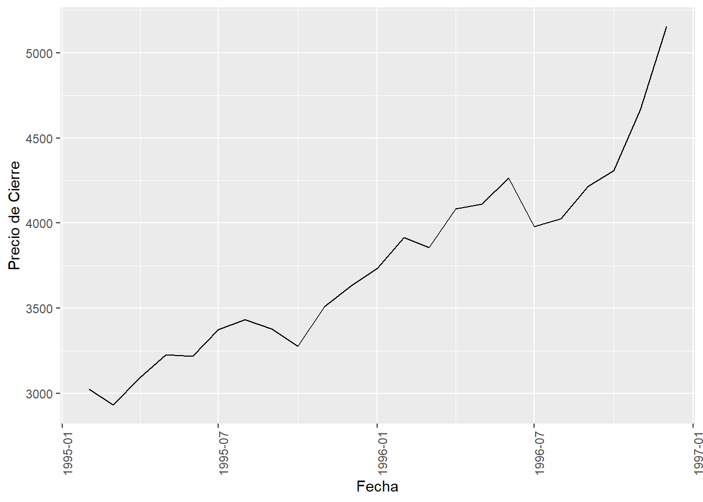
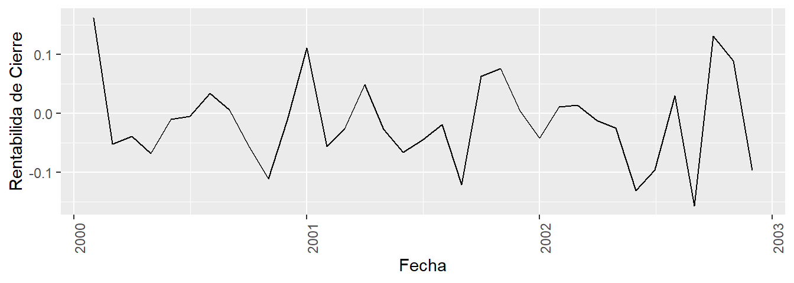
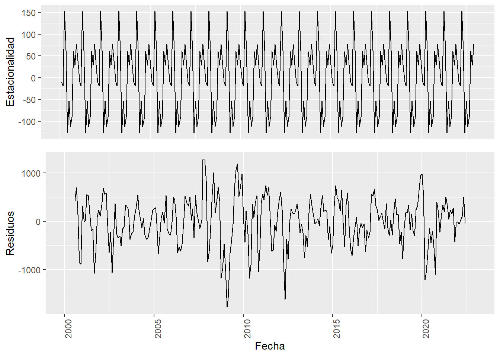
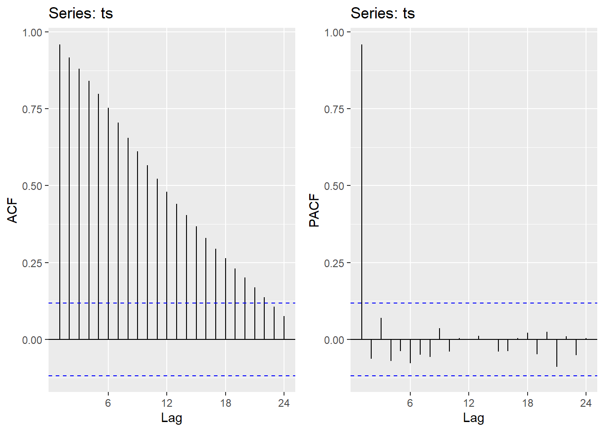

| Variable dependiente | Subíndice Discreto | Subíndice Continuo |
|---|---|---|
| Discreta | Proceso de estado discreto y tiempo discreto | Proceso de estado discreto y tiempo continuo |
| Continua | Proceso de estado continuo y tiempo discreto | Proceso de estado continuo y tiempo continuo |
Tomada de: Ruiz (2011).
| Date | Open | High | Low | Close | Volume | Adjusted |
|---|---|---|---|---|---|---|
| 2001-05-24 | 3.600 | 3.620 | 3.510 | 3.608 | 216270100 | -0.1292753 |
| 2001-05-25 | 3.600 | 3.676 | 3.580 | 3.602 | 50448300 | -0.1290603 |
| 2001-05-28 | 3.560 | 3.604 | 3.544 | 3.580 | 26118945 | -0.1282721 |
| 2001-05-29 | 3.562 | 3.626 | 3.562 | 3.614 | 26910070 | -0.1294903 |
| 2001-05-30 | 3.606 | 3.648 | 3.602 | 3.620 | 48229995 | -0.1297053 |
| 2001-05-31 | 3.620 | 3.676 | 3.610 | 3.670 | 24806710 | -0.1314968 |
Elaboración propia: Mediante el uso de RStudio con la base de datos histórico de “INDITEX”, obtenida de https://finance.yahoo.com/, en el periodo comprendido entre el 24-05-2001 al 31-05-2001.

Elaboración propia: Mediante el uso de RStudio con la base de datos histórico del IBEX, obtenida de https://finance.yahoo.com/, en el periodo comprendido entre el 01-1995 al 01-1997.

Elaboración propia: Mediante el uso de RStudio con la base de datos histórico del IBEX, obtenida de https://finance.yahoo.com/, en el periodo comprendido entre el 01-2000 al 01-2003.

Elaboración propia: Mediante el uso de RStudio con la base de datos histórico del IBEX obtenida de https://finance.yahoo.com/, en el periodo comprendido entre el 01-2000 al 01-2003, usando las rentabilidades calculadas a partir del precio de cierre.

Elaboración propia: Mediante el uso de RStudio con la base de datos histórico del IBEX obtenida de https://finance.yahoo.com/, descomponiendo la serie de tiempo conformada por las observaciones que abarcan el periodo del 01-2000 al 01-2023.

Elaboración propia: Mediante el uso de RStudio.
Tomada de: Deep learning with R de Chollet y Allaire (2018).
Tomada de: Deep learning with R de Chollet y Allaire (2018).
Tomada de: Tema 14: redes neuronales de Larrañaga (2007).

Elaboración propia: Elaborada a partir de Jing (2020). Muestra como el tamaño del vector de salida cambia según el tamaño de filtro que se usa.
Elaboración propia: Elaborada a partir de Jing (2020). Muestra como el parámetro stride afecta el tamaño del vector de salida.
Elaboración propia: Elaborada a partir de Jing (2020). Muestra como el parámetro dilation afecta el tamaño del vector de salida.
Elaboración propia: Elaborada a partir de Jing (2020). Muestra como el parámetro padding afecta el tamaño del vector de salida.
Tomadas de: Understanding LSTM networks, Olah (2015).
Tomadas de: Understanding LSTM networks, Olah (2015).
Tomadas de: Understanding LSTM networks, Olah (2015).
Tomadas de: Understanding LSTM networks, Olah (2015).
Tomadas de: Understanding LSTM networks, Olah (2015).
Tomadas de: Understanding LSTM networks, Olah (2015).
Tomadas de: Understanding LSTM networks, Olah (2015).
Tomadas de: Understanding LSTM networks, Olah (2015).